Memory Fit: Architectural Support for Page Placement by Learning Models of Good Behavior
This page was written by an AI model to give a high-level overview of the paper. Please check the paper for detail: arXiv.
Server main memory is no longer a single uniform resource. Alongside DRAM, systems now mix software-compressed memory (zswap), CXL memory expanders, emerging phase-change memories (PCM), and High Bandwidth Flash, each with its own latency, bandwidth, density, and read/write asymmetry. An operating system that wants to place pages well has to decide, for every page, which of these memories will actually serve it best, and that decision changes as a program's access pattern changes, sometimes within hundreds of millions of cycles.
Existing placement systems answer this with page temperature: how often a page is touched. Transparent Page Placement (TPP) ranks by recency, HeMem ranks by sampled access frequency, and Memtis adapts a hot-set threshold to the observed access distribution. Temperature works when one memory is uniformly better, but newer memories break that assumption: a hot page with parallel accesses can be a better fit for higher-latency CXL memory than a colder page with serialized accesses, compression inside a CXL expander makes access cost depend on page contents, and PCM write cost depends on whether a write follows a read or another write. Getting richer information costs more: page-table access and dirty bits are cheap but coarse, while Intel PEBS or AMD IBS require probabilistic downsampling that HeMem and Memtis report costing double-digit percentages of throughput or dropped samples, and the hardware-software system NEMO improves on this but still needs roughly 1.4 MiB of on-chip SRAM to track 16 GiB at page granularity, scaling toward 90 MiB per TiB.
The paper's proposal is memory fit: a per-page, per-memory score that measures how well a page's actual access pattern matches the kind of pattern that performs well on that memory, not how often the page is touched. Memory fit is comparative, a lower score means a better memory for that page, and the gap between two memories' scores for a page estimates the benefit of moving it. To compute this efficiently, the paper introduces Soft Trace Matching (STM), which treats each memory access as a (read or write, normalized reuse distance) event and scores a page's stream of events against a small, offline-learned model of what fast traces look like on each memory. STM borrows the nested, context-conditioned table structure of Context Tree Weighting from data compression, but interpolates between learned reuse anchors and trains its tables against measured relative completion time rather than against a coding-optimal distribution.
In the architecture, a monitor sitting after the last-level cache observes the post-cache access stream, evaluates each memory's STM model, and accumulates per-page deltas in a small on-chip delta cache. When an entry is written back, hardware merges it into a 64-bit record, kept in ordinary coherent memory and indexed by physical frame number, that can hold up to four 8-bit fit scores per page. If the preferred memory for a page changes, hardware pushes the page's frame number into a notification ring; Linux drains the ring, keeps bounded max-heaps of the best candidate pages to move into or out of each memory, and migrates bounded batches through its existing page-migration path under bandwidth and resource constraints. Hardware supplies the signal; software keeps all placement policy.
The authors implement memory fit and STM in a Small BOOMv3 RISC-V core run with FireSim on an AWS F2 FPGA, booting Linux 6.6, and compare it against Linux TPP. On an extended GUPS microbenchmark, memory fit recovers 72.4% (static) and 71.9% (phase-changing) of the cycle gap between worst-case and optimal placement, versus TPP's 19.2% and 33.3%, described in the abstract as 2.2 to 3.8 times as much of the gap as TPP. On Redis replayed at equal DRAM/PCM capacity, memory fit recovers 80% of the gap versus TPP's 19%. The 64-bit per-page record costs 0.195% of the memory it tracks, and STM's observation and notification processing adds 1.2% execution-time overhead at fixed placement.
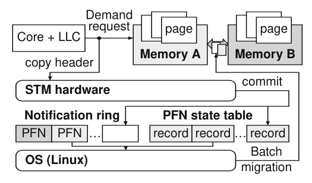
Key takeaways
- Memory fit is a comparative affinity score between a page and a memory, learned from access patterns, not a hotness counter.
- Soft Trace Matching (STM) scores a page's read/write, normalized-reuse-distance trace against offline-learned, per-memory models built on a Context Tree Weighting-style table structure.
- Hardware does the measurement (off the demand-request path, into a coherent per-page record and notification ring); Linux keeps all placement policy (bounded heaps, batched migration under bandwidth limits).
- Per-page cost is 8 bytes for 4 KiB of tracked memory (0.195% overhead); observation and notification add 1.2% execution-time overhead in the single-core prototype.
- Against Linux TPP on a BOOMv3 FPGA prototype, memory fit recovers 2.2 to 3.8 times as much of the GUPS placement gap and 80% versus 19% of the Redis placement gap at equal capacity; application-level benchmarks (Redis, llama.cpp) and composition with Colloid/MLP ranking are also measured.
From observed accesses to a page-placement signal
Why temperature is insufficient, how Soft Trace Matching scores a trace, the hardware pipeline that keeps this off the critical path, and how Linux uses the result.
1 · Why hotness is the wrong signal
Section 2 of the paper makes two observations. First, access behavior varies sharply in space and time: adjacent physical frames, because of the virtual-to-physical mapping, can be read-heavy, write-heavy, or nearly idle, and a given page's behavior can shift on the timescale of hundreds of millions of cycles (Figure 1 in the paper shows this directly for Redis). Second, and more fundamentally, hotness only predicts the best memory when every access to the faster memory has roughly the same benefit. That assumption breaks for newer memory systems: memory-level parallelism means a hot page with serialized accesses can do worse in fast memory than a colder page with parallel accesses; compression inside a CXL memory expander makes latency depend on a page's contents; and PCM's write cost depends on whether a write follows a read or another write. A system that only counts accesses cannot represent any of this.
The paper frames three requirements for a hardware placement signal: it must be expressive enough to distinguish different memories and access patterns, simple enough that software policy does not need to know memory-specific details, and efficient enough to update on every access without large on-chip state or demand-path delay. Software-only systems (TPP, HeMem, Memtis) push complexity into per-technology OS algorithms; hardware-assisted systems (M5, NEMO) simplify the software interface but M5 is limited to access counts and NEMO needs substantial on-chip state for its counters. The paper's goal is a mechanism that is expressive, simple, and efficient at the same time.
2 · What memory fit is
Memory fit is the paper's name for a per-page, per-memory score that indicates how well a page's observed accesses would perform in that memory, where "better" means faster. Scores are comparative in two ways: across memories, for a fixed page, the memory with the lower score is predicted to be faster; across pages, for a fixed memory, the gap between a page's current and alternate score estimates how much that specific page would benefit from moving. This comparability is what lets an OS policy prioritize: it can rank migration candidates by the size of their predicted improvement rather than by raw access count. Crucially, memory fit separates mechanism from policy. Hardware's only job is to produce this signal; it does not decide capacity allocation, migration cost, or application-level constraints, all of which stay in the OS.
3 · Soft Trace Matching: scoring a trace against a memory's model
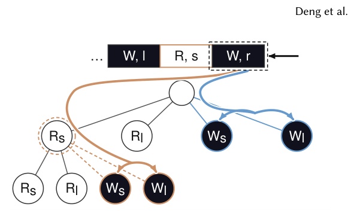
Soft Trace Matching (STM) is the algorithm that computes memory fit. It represents each memory access as an event: whether it is a read or a write, and its normalized reuse distance (the number of other accesses since this page was last touched, divided by an estimate of the current working-set size using a 16-register HyperLogLog counter). Normalizing lets a single learned model apply across working sets that differ by orders of magnitude.
For each memory, STM keeps a small table of learned weights at a handful of "reuse anchors" (short-reuse and long-reuse reference points, separately for reads and writes). An incoming access is scored by interpolating between the nearest anchors. The root table conditions only on the current event; the implementation adds one more table that conditions on the single preceding event (for example, scoring a write differently depending on whether it follows a short-reuse read or a long-reuse write), which matters because, for instance, a PCM write can cost differently depending on whether the media was just read. The two tables' outputs are combined with learned mixture weights, and the combined match value becomes a page's running, exponentially decaying score for that memory: an access the model finds typical for that memory moves the score little, an access the model finds unlikely moves it more.
This nested, context-conditioned table structure borrows from Context Tree Weighting, a technique from lossless data compression, but STM is not performing compression: its tables are trained, offline, to make the lower-scoring memory match the one that is empirically faster in paired counterfactual simulations of the same fixed work, with the score gap tracking the magnitude of the completion-time advantage (detailed in the paper's Appendix A.1). A root-only model (one table, no conditioning) is already a valid, if coarser, STM instance; additional conditioning tables are refinements added when a memory's performance depends on event history.
4 · Hardware pipeline: observing accesses without stalling them
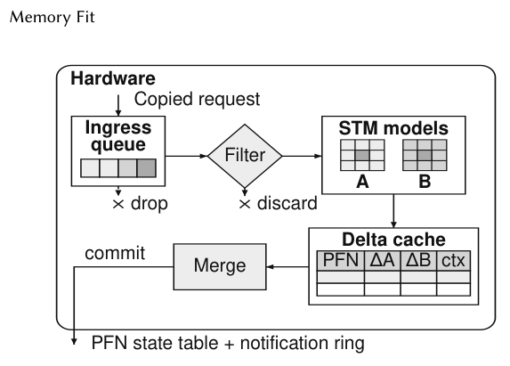
A monitor sits after the last-level cache and copies each post-cache memory-request header into an ingress queue while the demand request proceeds unmodified; if the queue is full, the header is simply dropped, so STM never adds backpressure to an actual memory access. A range filter discards accesses to the memory fit metadata structures themselves, so STM cannot recursively observe its own writes.
Accepted observations update a 64-entry, four-way delta cache keyed by page. A cache hit updates the page's accumulated delta; a cache miss starts a fresh entry at zero rather than reading the page's existing record from memory, which is possible because STM's update is a decaying average and can be expressed as an associative affine transform (how much of the prior score survives decay, plus the new evidence). Only when an entry is evicted does hardware perform one non-atomic read-modify-write to the memory-backed per-page record, merging the two terms. This design keeps STM off the demand-request critical path, bounds the metadata traffic it generates to one access per eviction rather than one per observation, and backs off automatically: when the commit queue is under pressure, the delta cache lowers the rate at which new pages displace existing entries, so traffic falls as congestion rises without an explicit bandwidth estimator.
Two randomized techniques keep an 8-bit record from losing information or flapping. Because the on-chip arithmetic is higher precision than the 8-bit stored score, stochastic rounding probabilistically rounds up or down according to the fractional remainder (using the same random draw for both memories being compared, so rounding cannot itself invert an ordering), preserving the expected value of many small updates. Separately, when two memories' scores are close, repeated small updates can flip which one looks preferable; a randomized-ticket, hysteresis-based low-pass filter suppresses most of these reversals, requiring progressively stronger evidence (a per-page hysteresis counter) before a flip is reported, which the paper shows removes the bulk of noise-driven notifications (see Evaluation tab).
5 · The committed record and the coherent interface
Each tracked 4 KiB page has a 64-bit record, kept in ordinary coherent main memory and indexed by physical frame number (PFN), holding up to four 8-bit memory fit scores (the prototype uses two), a timestamp and access count used to resume STM state after eviction, a context field, an outstanding-notification bit, and an optional coarse memory-level-parallelism (MLP) class. At 8 bytes per 4 KiB page, this is 0.195% of the memory it covers. When a commit changes which memory is preferred, hardware atomically sets the outstanding-notification bit and appends the page's PFN to a fixed-size event ring; further updates to the same page do not add duplicate ring entries until Linux has consumed the existing one. The ring raises an interrupt after a configurable batch size or a timeout, whichever comes first, so Linux can process notifications in batches rather than one at a time. Because the ring entry carries only a PFN, never a cached copy of the score, Linux always re-reads the latest committed record before acting, so a delayed or coalesced notification never causes it to act on stale data.
6 · Acting on memory fit in Linux
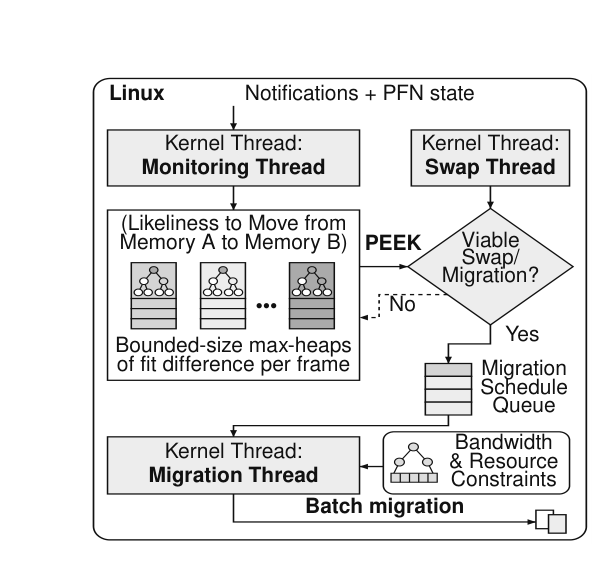
A kernel driver splits interrupt handling into an upper half, which disables further ring interrupts and schedules work, and a lower half, which drains the ring, re-reads each page's current record, and computes the benefit of moving it. The driver maintains one bounded max-heap per memory, keyed by the fit-score reduction a move would achieve; a later notification updates an existing heap entry rather than duplicating it, and a full heap only admits a new page if it beats the heap's weakest candidate. A separate migration thread wakes when a heap changes: if the destination memory has free capacity it migrates the best candidate directly; if not, it pairs the best incoming candidate with a resident page from the opposite heap and only accepts the swap if it reduces their combined score. Selected pages are revalidated, grouped into bounded batches, and migrated through Linux's existing page-migration path under bandwidth and resource constraints.
This software path is designed to stay scanless (it only ever processes pages that hardware notified it about, never scanning memory itself), incremental (each notification costs O(log k) work in a bounded k-entry heap), and convergent for a frozen set of scores: because every accepted move or swap strictly improves the current placement and the number of possible assignments is finite, the process reaches a local optimum over the represented candidates. The paper's Appendix A.3 additionally shows that, viewed as weighted bipartite matching between pages and capacity slots, this greedy acceptance rule recovers at least half of the optimal matching's total weight. Results from this pipeline are covered in the Evaluation tab.
7 · Training the per-memory models offline
STM's tables are learned, not hand-tuned. A training simulator runs the same fixed-work access window twice, once with the target pages placed in each memory, and records the two completion times; their log ratio is the target signal that the lower memory fit score should track (clipped to a bounded range). Training data is 200 synthetic traces engineered to vary read/write mixture, reuse scale, conditioning context, locality, concurrency, warm versus cold state, and phase changes; the paper is explicit that these traces have no relationship to the GUPS, Redis, or llama.cpp workloads used in evaluation, so the models are not fit to the test workloads. The whole STM computation, including its 8-bit quantization, is implemented as a differentiable function so that gradient-based training can jointly adjust the probability tables, reuse anchors, the short/long-reuse boundary, and the mixture weights; the trained constants are then quantized to 8 bits and checked as an integer model before being compiled into the hardware image. The paper notes a programmable table could instead be loaded over MMIO at boot without changing the hardware pipeline.
8 · The FPGA implementation and its hardware cost
Memory fit and STM are implemented as a FireSim target containing a Small BOOMv3 (one-wide, out-of-order RISC-V) core with 16 KiB four-way L1 caches and a 4 MiB eight-way last-level cache, running on an AWS F2 FPGA and booting Linux 6.6. Two modeled physical memories total 16 GiB, each using a quad-rank FR-FCFS timing model and exposed to Linux as two 8 GiB NUMA nodes; the core and memory bus run at 1 GHz (modeled), STM and the remaining buses at 500 MHz, and the routed FPGA image itself at 18 MHz. The two tracked memory ranges use dedicated movable Linux pageblocks so pages stay eligible for the kernel's existing migration path, and the driver transfers a page's 64-bit record along with the data on every successful migration.
Post-route, STM and its request monitor use 10,414 LUTs, 7,572 flip-flops, and 13 DSP blocks (no block RAM), which is 15.1% and 15.9% of the Small BOOM tile's LUTs and flip-flops respectively. Scaled against a reference budget of 350,000 to 500,000 LUT-equivalents for a large server core, the monitor is 2.1 to 3.0% of one core's budget; because the monitor is shared uncore hardware observing the memory path rather than per-core logic, one instance shared across a 96-core reference processor is 0.022 to 0.031% of the combined core budget. Measured runtime overhead and application results are covered in the Evaluation tab.
Evaluation
What the FireSim/BOOMv3 prototype measures against Linux TPP, in the paper's order.
All results come from one hardware/software prototype: a Small BOOMv3 RISC-V core run with FireSim on an AWS F2 FPGA, booting Linux 6.6, with two modeled physical memories standing in for DRAM and a write-limited memory (PCM-like bandwidth, and separately a CXL-like added-latency memory). The paper does not run HeMem or Memtis because both rely on Intel PEBS, and event sampling on RISC-V remains unsupported. Every comparison uses the same capacity controller and migration mechanism for both policies, differing only in how pages are ranked, and reports "cycle-gap recovery": the percentage of the gap between worst-case and optimal placement performance that a policy captures (100% = optimal, 0% = worst case).
| What | Value in the paper |
|---|---|
| Platform | Small BOOMv3 core, FireSim, AWS F2 FPGA, Linux 6.6; core/memory bus 1 GHz (modeled), STM 500 MHz, routed image 18 MHz |
| Memories | Two 8 GiB NUMA nodes, 16 GiB total; PCM write bandwidth modeled at 10% of DRAM's; separately, a CXL-like memory with added latency and a retrained model |
| Workloads | Extended GUPS (read-only/write-only/cold page groups, static and phase-changing variants; a 3-group parallel-read/parallel-write/serialized-RMW variant for composition tests); Redis (batched KV lookups plus pointer-chasing traversal); llama.cpp (Q8_0 TinyStories-15M, 8 contexts, weights/activations/KV caches, 24 passes) |
| Baselines | Linux TPP; random placement (GUPS only); worst-case and optimal placements (normalization endpoints) |
| Metrics | Placement accuracy (%); cycle-gap recovery (%); execution-cycle overhead (%); throughput gain over TPP (%); interrupt/notification counts; LUT/flip-flop/DSP cost |
On extended GUPS, memory fit places with perfect accuracy; TPP does no better than random
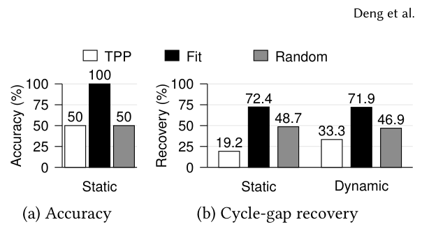
What it shows. Extended GUPS has a read-only group, a write-only group, and a cold group of pages, with DRAM sized to hold one active group; the optimal placement puts the write-only group in DRAM. Panel (a) reports placement accuracy for TPP, memory fit ("Fit"), and random placement in the static configuration: memory fit reaches 100%, while TPP and random both reach 50%. Panel (b) reports cycle-gap recovery for static and dynamic (mid-run phase change) configurations: TPP recovers 19.2% (static) and 33.3% (dynamic), memory fit recovers 72.4% and 71.9%, and random recovers 48.7% and 46.9%.
What to take from it. Despite TPP's low accuracy, its dynamic-configuration recovery rises relative to static because its wrong estimates happen to benefit from the mid-run reversal; the paper argues this is a coincidence of its inaccuracy rather than a real adaptivity advantage. The gap between memory fit's accuracy (100%) and its lower recovery numbers (72.4 to 71.9%) reflects the real cost, on this single-issue core, of performing software page migrations even when placement decisions are correct.
Memory fit adapts to a phase change quickly; observation adds 1.2% overhead
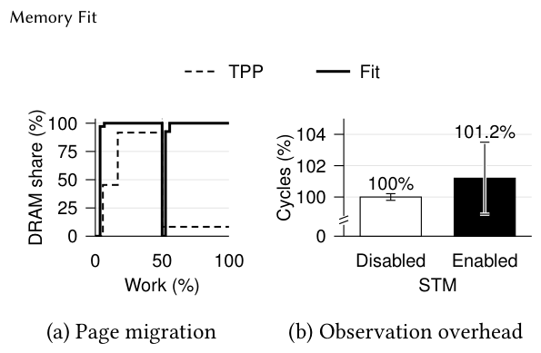
What it shows. Panel (a) tracks the fraction of migration work done against DRAM share over time for TPP versus memory fit as the GUPS write-heavy and read-heavy groups swap roles; memory fit quickly restores a write-heavy-in-DRAM placement, while TPP is slow and inaccurate. Panel (b) measures the standalone cost of observation and notification processing with placement and access patterns held fixed, comparing STM disabled versus enabled; execution cycles rise from 100% to 101.2%, a 1.2% overhead, with whiskers showing one standard deviation across measurement windows.
What to take from it. The 1.2% figure is measured with STM's software processing sharing the same single core as the workload; the paper expects this overhead to largely disappear in a multicore system by assigning interrupt and notification handling to a separate core, as is common practice, though this is not measured directly.
Memory fit outperforms TPP across all tested Redis DRAM capacities
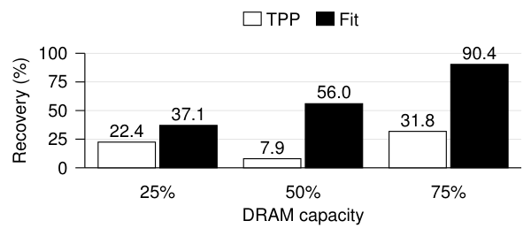
What it shows. Redis combines batched key-value lookups (which permit memory-level parallelism) with pointer-based graph traversal with per-node updates. At configured DRAM capacities of 25%, 50%, and 75% of the footprint, memory fit recovers 37.1%, 56.0%, and 90.4% of the cycle gap between all-PCM and all-DRAM placement, while TPP recovers 22.4%, 7.9%, and 31.8%.
What to take from it. TPP's recovery is non-monotonic across capacities (dipping at 50%), which the paper attributes elsewhere to migration and sampling overhead competing with placement benefit on the single core; memory fit's recovery rises monotonically with capacity.
Replaying memory fit's own Redis placements recovers 80% of the gap, versus 19% for TPP's
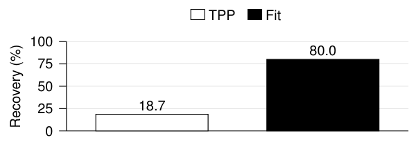
What it shows. At 50% DRAM capacity, the paper captures the sequence of page placements each policy actually chose online, then replays those placements with controller and migration activity disabled, isolating placement quality from runtime overhead. Replayed memory fit placements recover 80.0% of the cycle gap; replayed TPP placements recover 18.7%.
What to take from it. Because this measurement removes migration and monitoring cost, the gap between 80.0% and 18.7% is attributable to which pages each policy chose to place where, not to how expensively it got there, isolating memory fit's placement-accuracy advantage from Result 3's combined effect.
On llama.cpp, TPP's overhead makes it worse than all-PCM at small DRAM capacities
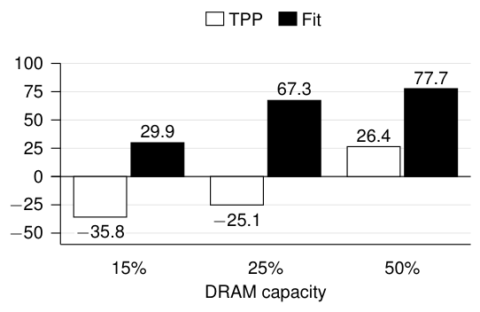
What it shows. The llama.cpp workload accesses a Q8_0 TinyStories-15M model's weights, activations, and KV caches across eight contexts sharing weights, measured over 24 passes including convergence and all online controller/migration cost. At DRAM capacities of 15%, 25%, and 50%, memory fit recovers 29.9%, 67.3%, and 77.7% of the all-PCM-to-all-DRAM cycle gap, while TPP recovers -35.8%, -25.1%, and 26.4%.
What to take from it. TPP's negative recovery at 15% and 25% capacity means it performs worse than simply leaving everything in PCM: the paper attributes this to TPP performing far more page moves and incurring frequent minor page faults for access sampling, with that overhead landing on the same core as the workload. Memory fit instead prioritizes write-sensitive activation and KV-cache pages and recovers positive value at every capacity tested.
The same advantage holds with a higher-latency, CXL-like memory
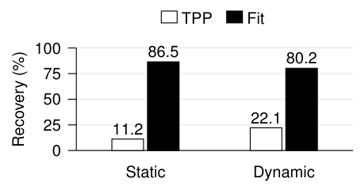
What it shows. To emulate a CXL-like device, the authors add latency to one modeled memory, load an STM model retrained for this new memory, and rerun extended GUPS with added hot/cold separation. In the static and dynamic configurations, memory fit recovers 86.5% and 80.2% of the cycle gap, while TPP recovers 11.2% and 22.1%.
What to take from it. The paper presents this as evidence that memory fit's interface and its training pipeline retarget to a new memory profile (here, dominated by latency rather than write-bandwidth asymmetry) without changing the hardware pipeline, only the trained tables.
Memory fit composes with Colloid and per-page MLP ranking rather than conflicting with them
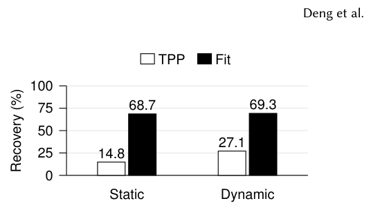
What it shows. An extended GUPS variant adds a third access pattern alongside cold pages: parallel reads, parallel writes, and serialized read-modify-writes, with DRAM sized to hold two of the three active groups; the dynamic configuration swaps the parallel-read and serialized-access groups halfway through. Combined with Colloid and ALTO-style memory-level-parallelism (MLP) ranking, memory fit recovers 68.7% (static) and 69.3% (dynamic) of the cycle gap, versus TPP's 14.8% and 27.1%. The paper separately reports memory fit improving workload throughput over TPP by 13.2% (static) and 10.3% (dynamic) in this configuration.
What to take from it. This result targets a case temperature-based policies handle poorly by construction (differentiating pages by access parallelism, not just frequency); the paper's point is that memory fit's signal is complementary to, not redundant with, movement-scheduling techniques like Colloid and MLP-aware ranking.
Coalescing and low-pass filtering substantially cut the software's notification load
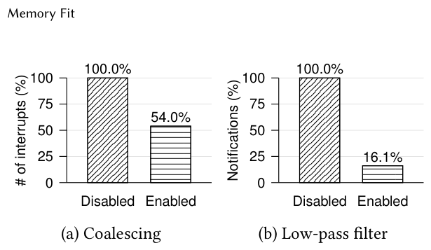
What it shows. With placement fixed and migration disabled on the extended GUPS workload, enabling the ring's notification coalescing (one entry per outstanding page rather than one per update) reduces ring publications and interrupts by 46.0% (100% to 54.0%). With coalescing enabled in both runs, additionally enabling the randomized-ticket, hysteresis-based low-pass filter reduces decision notifications by a further 83.9% (100% to 16.1%). The paper separately reports that, in the llama.cpp workload, combining these refinements reduces late-run cycle overhead relative to an all-fast-memory baseline from 3.7% to 0.26%, without a measured loss in STM's placement quality.
What to take from it. Most of memory fit's implementation complexity beyond the core STM tables goes toward suppressing noise before it reaches software; this result is the paper's evidence that those mechanisms earn their cost by removing the large majority of notifications a naive implementation would generate.
FAQ
Q·What is "memory fit," in one sentence?▾
A per-page, per-memory score, computed in hardware, that predicts how fast a page's observed read/write pattern would run in that memory, so the operating system can rank pages by predicted benefit instead of by raw access frequency.
Q·How is this different from hotness-based systems like TPP, HeMem, or Memtis?▾
Those systems rank pages by how often they are accessed (temperature) and assume the faster memory is uniformly better per access. Memory fit instead asks whether a page's specific access pattern, its read/write mix, ordering, and reuse distance, matches the kind of pattern that happens to run fast on a given memory. Two equally hot pages can get different memory fit scores if, for example, one has serialized accesses and the other parallel ones, or one is read-mostly and the other write-heavy.
Q·What is Soft Trace Matching, intuitively?▾
It is the algorithm that computes memory fit. For each memory, it keeps a small table of learned weights describing what a "typical fast" access sequence looks like for that memory (in terms of read/write type and normalized reuse distance, optionally conditioned on the previous access). Each new access is matched against these learned patterns by interpolation, and a page's running score decays toward the match quality of its recent accesses. It is a learned pattern-matcher, not a counter.
Q·Why learn the models offline instead of computing something simpler online?▾
Because the thing being predicted, relative completion time on a specific memory technology, is not directly observable from an access stream in real time; it has to be learned from paired counterfactual simulations where the same work runs once per memory. Training lets the tables capture subtle, memory-specific effects (write-after-read cost asymmetry on PCM, for instance) that a fixed online heuristic like "count accesses" cannot represent.
Q·How much hardware state does this need, compared to NEMO or M5?▾
The committed per-page record is 64 bits, 8 bytes per 4 KiB page, or 0.195% of tracked memory, stored in ordinary coherent memory rather than dedicated on-chip SRAM. NEMO, by contrast, needs roughly 1.4 MiB of SRAM to track 16 GiB and scales toward 90 MiB per TiB if kept entirely on-chip. The STM monitor and pipeline logic itself cost about 10,400 LUTs and 7,600 flip-flops in the prototype, projected to 2.1 to 3.0% of one large server core's LUT budget, shared across all cores as uncore hardware.
Q·What's in the 64-bit per-page record?▾
Up to four 8-bit memory fit scores (two used in the prototype), a timestamp and access count that let STM resume state after a page's delta-cache entry is written back and later reinstalled, a context field, an outstanding-notification bit, a stable-memory/stability field used by the hysteresis filter, and an optional coarse memory-level-parallelism (MLP) class.
Q·How does Linux decide which pages to actually move?▾
A driver drains the hardware notification ring, re-reads each flagged page's current record, and inserts eligible pages into a bounded max-heap per memory, keyed by the fit-score improvement a move would give. A migration thread pops the best candidate: if the destination has free capacity it migrates directly; if not, it pairs the candidate with a resident page from the opposite heap and only swaps them if the pair's combined score improves. Accepted pages are batched and migrated through Linux's existing page-migration path under bandwidth and resource limits.
Q·Does memory fit work for memories other than DRAM/PCM?▾
The paper tests a second configuration where one memory is given added latency to emulate a CXL-like expander, with a model retrained for that profile; memory fit recovers 86.5% and 80.2% of the cycle gap there (versus TPP's 11.2% and 22.1%), using the same hardware pipeline, only the trained tables change. The authors frame STM's record format and record representation as general and note that other representations might be needed for future memory tradeoffs not yet captured.
Q·Why not just use Intel PEBS or AMD IBS like HeMem and Memtis?▾
PEBS/IBS-style sampling requires downsampling to control CPU overhead, which the paper notes can cost HeMem up to 30% dropped samples or an 18% GUPS throughput hit, and forces Memtis to cap sampling near 3% of one core. More fundamentally, sampled access counters still only measure frequency; they don't directly express how well a specific access pattern suits a specific memory's cost model the way STM's trace matching does. Separately, the prototype doesn't use PEBS at all because equivalent event sampling is not yet supported on RISC-V.
Q·What do the coalescing and low-pass filtering optimizations do?▾
Coalescing keeps only one outstanding ring entry per page, instead of one per update, cutting ring publications and interrupts by 46.0% in the measured workload. The low-pass filter uses randomized "tickets" and a per-page hysteresis counter to require stronger evidence before reporting a memory preference reversal, suppressing a further 83.9% of decision notifications; this matters because near-tied scores can otherwise flip ordering on small, noisy updates, making software chase noise instead of real changes.
Q·Is there a guarantee that the greedy placement policy converges to something good?▾
For a frozen set of memory fit scores and candidates, every accepted migration or swap strictly reduces the total score, so the process reaches a local optimum (no represented one-page move or two-page swap can improve further) in finite steps. Framed as weighted bipartite matching between pages and capacity slots, the paper's Appendix A.3 shows this greedy acceptance rule is guaranteed to recover at least half of the weight of the true optimal matching. This is a steady-state guarantee; it does not cover periods when scores or the candidate set are actively changing.
Q·What would it take to deploy this beyond the prototype?▾
The authors identify several open directions: evaluating large (2 MiB) and huge (1 GiB) pages (explicitly deferred as future work), scaling the shared monitor and its backpressure mechanisms to multi-chiplet or multi-socket systems, exploring other training objectives beyond lowest completion time (such as energy or durability), and testing whether other scoring algorithms could outperform STM within the same memory fit interface.